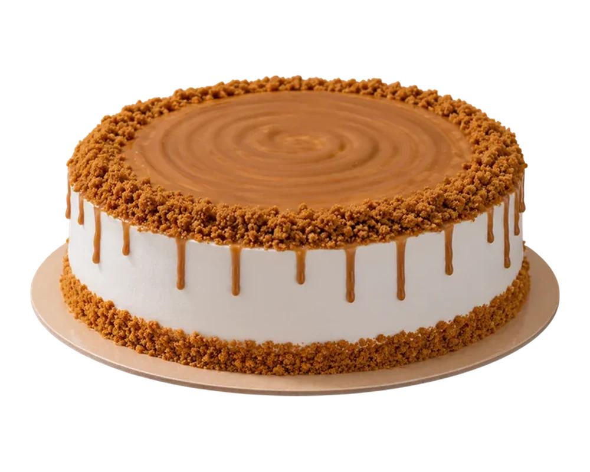
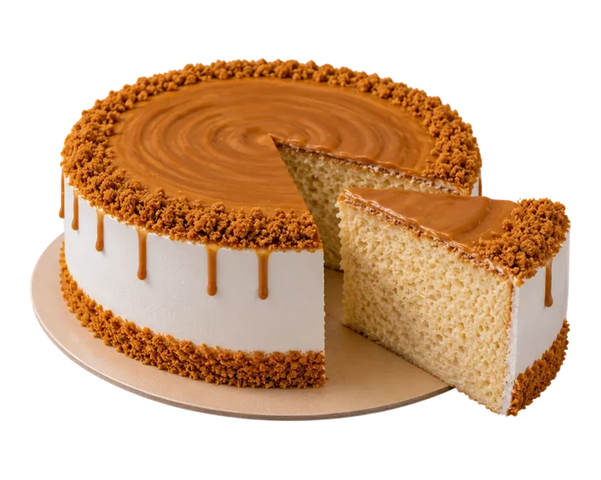

Description: Three milks deep, Lotus crunch on top. This one doesn't play fair.


Price: Rs. 2,999
Absolutely loved this cake! It was super soft, creamy, and the Lotus topping was delicious.
One of the best three milk cakes I have tried. The sweetness was perfectly balanced and the Lotus flavor was amazing.
Really delicious and moist. I especially loved the crunchy Lotus crumbs on top.
The cake was fresh, soft, and full of flavor. Definitely ordering this again!
Perfect for Lotus lovers. The milk cake was very moist and the Lotus spread on top made it even better.
@Copyright ButtterCloud 2026